What germs are, how they move from one person to the next, and the everyday hazards that let them.
Meet Gerry the Germ. Gerry has one job: to get from one person to the next. Your job as a support worker is to stop him. This lesson shows you how Gerry travels, so you know exactly where to block him.
Australia has a set of national rules for safe health care. They are called the NSQHS Standards. One of them is all about infection.
Listen to the explanation
NP3 S1 P1The NSQHS Standards (National Safety and Quality Health Service Standards) are national rules for safe, good quality care.
NP3 S1 P2Standard 3 is called Preventing and Controlling Infections.
NP3 S1 P3Standard 3 wants to reduce the risk of people (patients, residents, clients and workers) catching an infection that could have been prevented.
NP3 S1 P4If an infection does happen, it must be managed well.
NP3 S1 P5It also aims to stop antimicrobial resistance, to use antibiotics and other antimicrobials wisely, and to use infection control resources in a sensible, sustainable way.
2 Three words: colonisation, infection, disease **
These three words sound similar. They mean three different things. Gerry can be on you, in you, or making you sick.
Listen to the explanation
NP3 S2 P1Colonisation: germs live on or in the body (for example on the skin) but they cause no illness and no signs of infection.
NP3 S2 P2Infection: germs (pathogens) get inside the body and the immune system fights back. The person may feel sick, or may feel nothing at all. Everyone reacts differently.
NP3 S2 P3Disease: an illness with clear signs and symptoms, for example a fever, weight loss or a sore throat. Some diseases come from infections. Some do not.
Try itWhich word is it?
Tap a description, then tap the word it belongs to. Or drag it.
The notes above will blur while you try. You can peek any time.
Link three of the chain, the mode of transmission, has four main types. You will use these four words in the next section.
Listen to the explanation
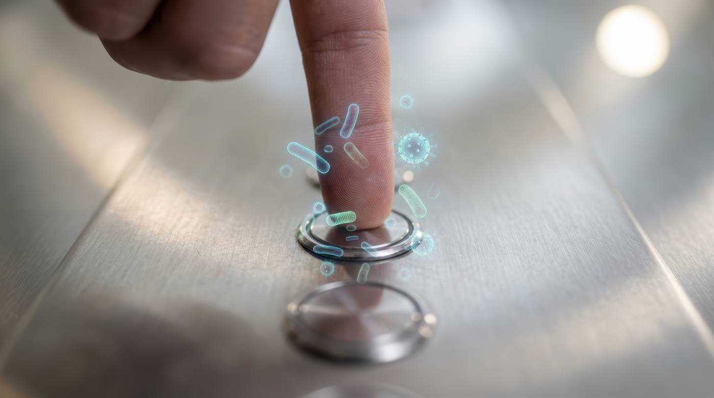
Contact Touching a person or a surface
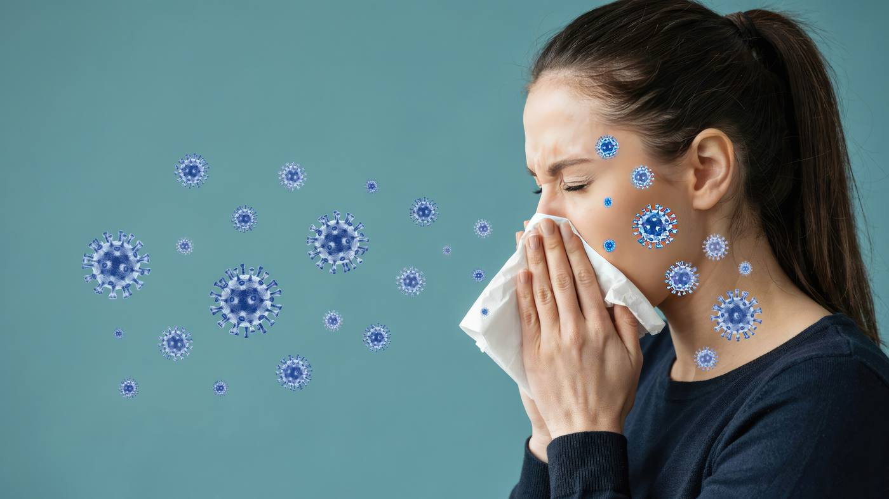
Droplet Big drops that land within about a metre
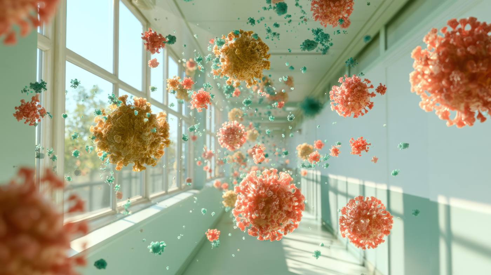
Airborne Tiny particles that float and travel far
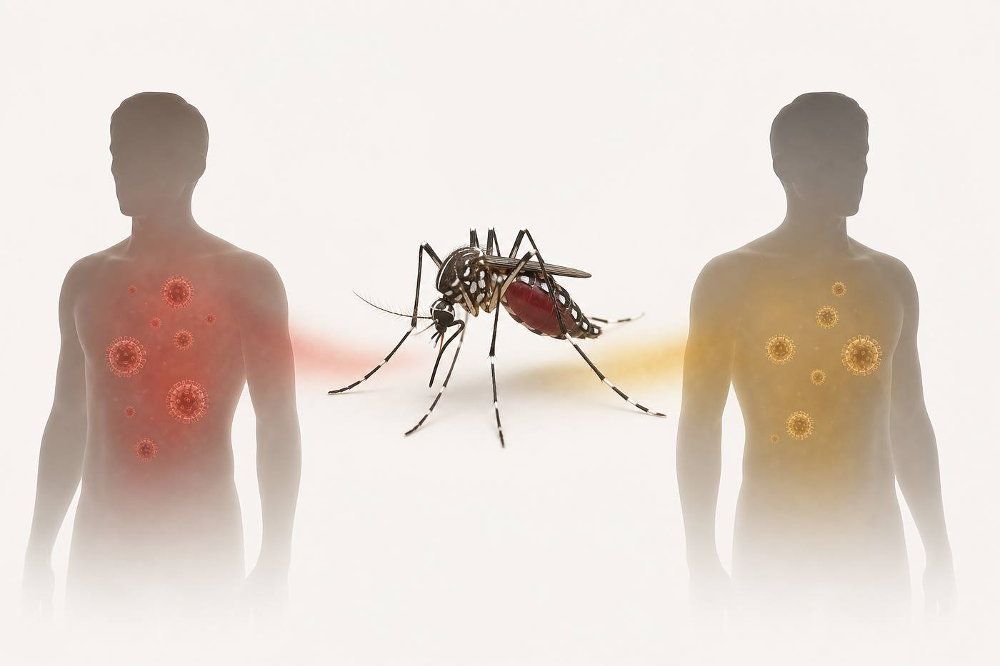
Vector-borne Carried by an insect or animal
NP3 S5 P1Contact: the germ moves by touch. Direct contact is skin to skin. Indirect contact is through something in between, like a bed rail, a towel or your hands.
NP3 S5 P2Droplet: big drops fly out when someone coughs, sneezes or talks. They land on people and surfaces within about one metre.
NP3 S5 P3Airborne: tiny particles stay floating in the air and can travel much further than a metre. Measles and TB travel this way.
NP3 S5 P4Vector-borne: the germ is carried by an insect or animal. A mosquito carrying malaria is the classic example.
NP3 S5 P5Many germs use more than one mode. A cold is spread by droplets and by contact with the hands that caught them.
A reservoir is a place where germs live and multiply. For each one you need to know how the germ gets from there to a person (the method) and which mode of transmission that is.
People
Other people are the biggest reservoir. Germs leave in body fluids, on skin and in droplets.
Method: incorrect use of PPE lets germs reach cuts on your hands, your mouth or nose, or lets infected body fluids reach you from a contaminated object.
Mode: droplet and contact.
Blood and body fluids
Blood, urine, faeces, vomit, saliva and wound fluid can all carry germs.
Method: germs get in through a needle prick, an open wound, broken skin or a mucous membrane (eyes, nose, mouth).
Mode: droplet (and contact).
Food and water
Contaminated food and water carry germs straight into the gut.
Method: eating or drinking contaminated food or water. Risky foods include seafood, shellfish, soft cheeses and meat dishes left out too long.
Mode: contact and droplet.
Animals (for example bats)
Australian bat lyssavirus is carried by bats. It is rare but deadly.
Method: being bitten or scratched by a bat, or getting bat saliva on broken skin or in your eyes, nose or mouth.
Mode: droplet and contact.
Never handle a bat. Call a trained, vaccinated wildlife carer.
Bird flu (avian influenza)
A flu virus that lives in birds and can, rarely, pass to people.
Method: handling sick birds, their droppings or feathers, then touching your mouth or eating without washing your hands.
Mode: droplet and contact.
Insects
Some insects carry germs from one person to another.
Method: an insect bite. A mosquito carries the malaria parasite (plasmodium) from an infected person to the next.
Mode: vector-borne.
Waste
Rubbish, clinical waste, soiled pads and dressings are full of germs.
Method: handling waste without the right PPE lets germs reach cuts on your hands, your mouth or nose, or lets infected material from a contaminated object reach you.
Mode: contact, droplet and airborne.
Soil (Legionella)
Potting mix and soil can carry Legionella longbeachae, a bacterium that causes Legionnaires' disease, a type of pneumonia.
Method: breathing in dust from potting mix or soil, or getting it on your hands and then your face.
Mode: contact and airborne.
Wear a mask and gloves when gardening. Wet the potting mix first.
Watch out The method column must say how the germ travels: "bitten", "ingested", "breathed in", "through a needle prick". The word "exposed" on its own is not a method. (The example row in the assessment, Water: ingested, shows the style.)
Try itFill the reservoir table
For each reservoir choose a method and a mode. Then press Check.
The notes above will blur while you try. You can peek any time.
A hazard is anything that could cause harm. For each infection hazard you should be able to say what the risk is and name two ways to control it.
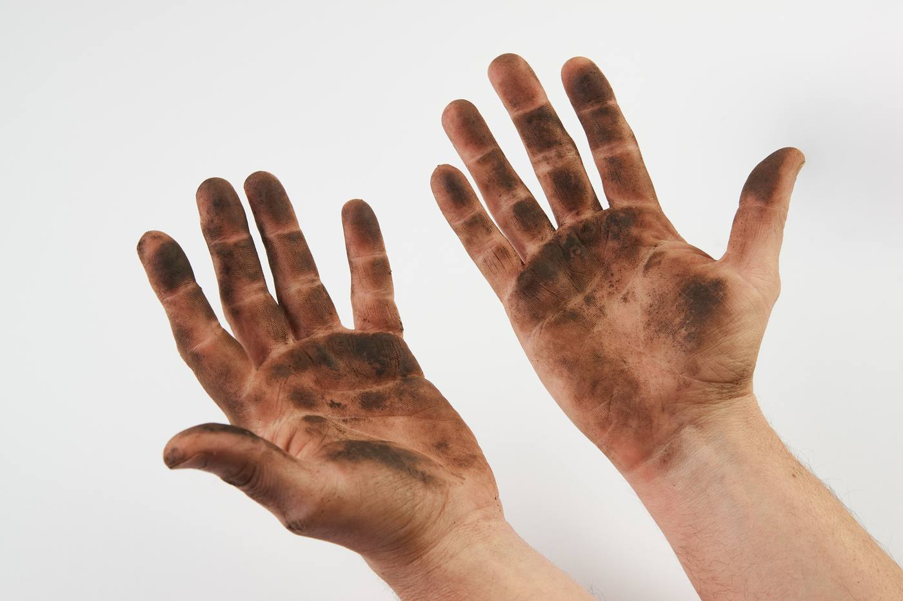
Hazard: not washing hands after touching a person
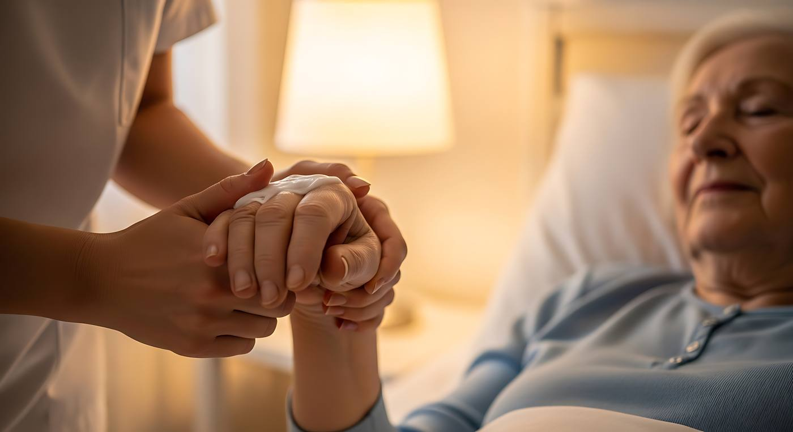
The risk: you carry germs from that person to the next person, or to yourself. People are put at risk of infection from others who carry infectious agents.
Control 1: make hand washing easy. Soap, water and alcohol-based hand rub must be close by and easy to get to.
Control 2: wash with soap and water when your hands look dirty. When they look clean, soap and water or hand rub are both fine.
Hazard: handling sharps the wrong way
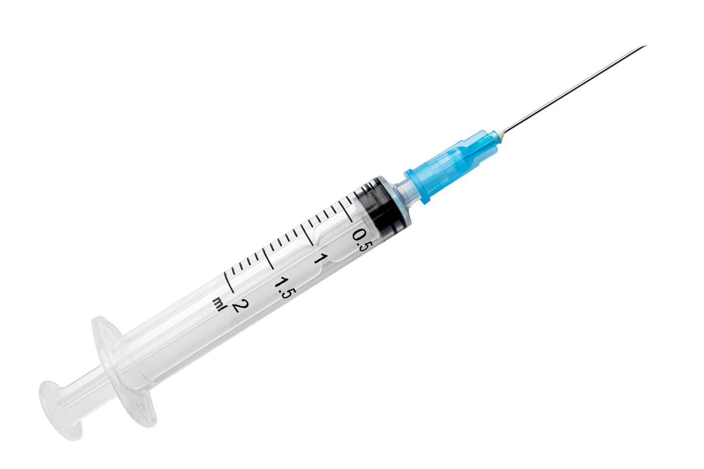
The risk: a needle or other sharp pricks the skin and germs from blood go straight into the bloodstream. The big three are hepatitis B, hepatitis C and HIV.
Control 1: eliminate or reduce. Avoid needles and sharps where there is a safer option.
Control 2: isolate the hazard. Use safety-engineered devices (needles that retract or shield) and put sharps straight into a proper sharps container.
Hazard: coughing or sneezing without covering
The risk: droplets full of germs spray into the air. Other residents, staff and visitors catch the cold or flu.
Control 1: cover every cough and sneeze with a tissue (bin it straight away) or your elbow, then wash your hands.
Control 2: stay home when you have a respiratory infection until the symptoms are gone.
Watch: Medusa: manage risk (Adrie Homan)
Try itRisk or control?
Sort each statement into the right hazard. Tap a statement, then tap the hazard box.
The notes above will blur while you try. You can peek any time.
A needlestick is when a used needle pricks your skin. In the assessment you are pushing rubbish into a public bin and a hidden needle pricks your finger.
Listen to the explanation
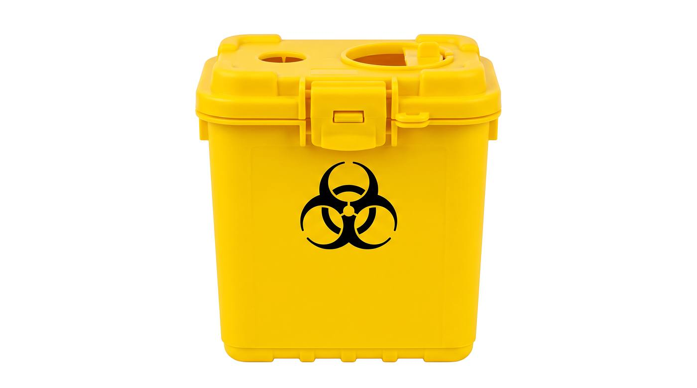
NP3 S8 P1A needlestick is a penetrating injury. The needle gives germs a direct road into the bloodstream. Germs that travel this way include hepatitis C and HIV.
NP3 S8 P2Never recap a used needle. Most needlestick injuries happen while recapping.
NP3 S8 P3Put used sharps straight into a sharps container, right where you are. Never leave a sharp on a bench or a bed.
NP3 S8 P4Use safety-engineered devices when your employer provides them, and help choose and test them.
NP3 S8 P5Avoid needles when there is a safe alternative.
NP3 S8 P6Plan how you will handle and dispose of the sharp before you start.
NP3 S8 P7Report every needlestick, every sharp injury and every near miss straight away, so you get follow-up care and the hazard gets fixed.
NP3 S8 P8Do your infection prevention training.
Watch: Pharmaceutical waste and sharps (Adrie Homan)
Watch out For the needlestick question, say how the infection gets in: a penetrating injury gives a direct line into the bloodstream. Then give four controls.
9 Cough and sneeze manners (respiratory etiquette) **
Your colleague has a cold and keeps sneezing. What four things can you tell them to do so they do not spread it? This is called respiratory hygiene and cough etiquette.
Listen to the explanation
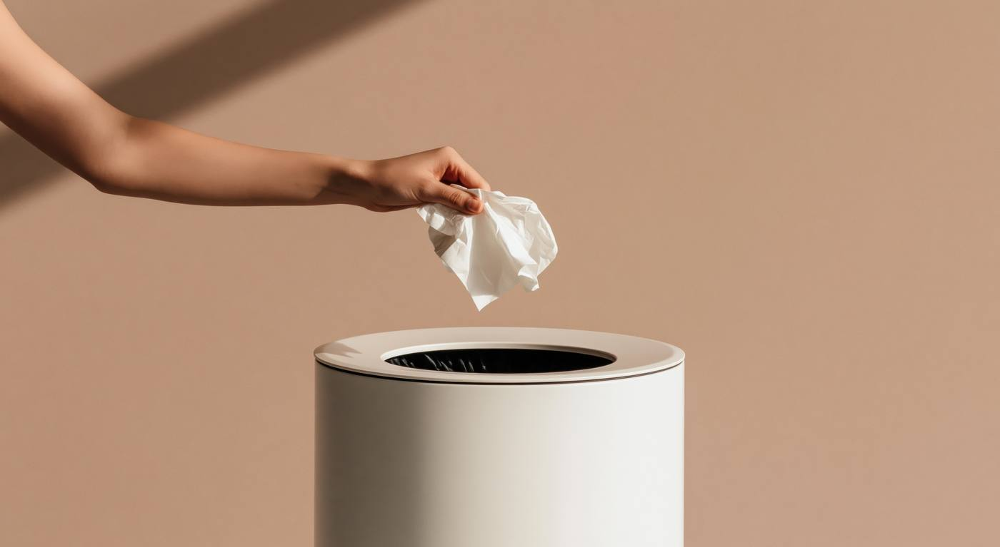
1. Tissue, then bin it
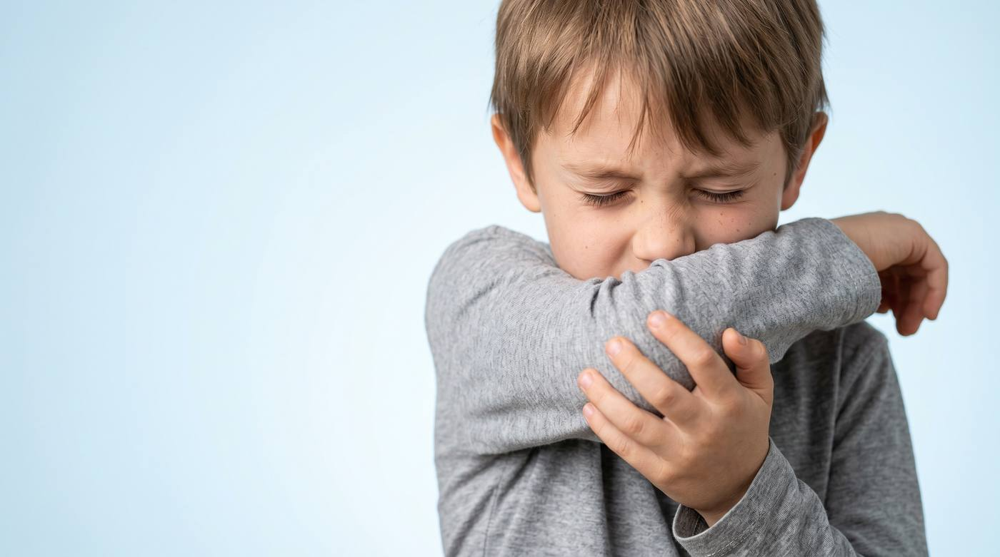
2. No tissue? Elbow
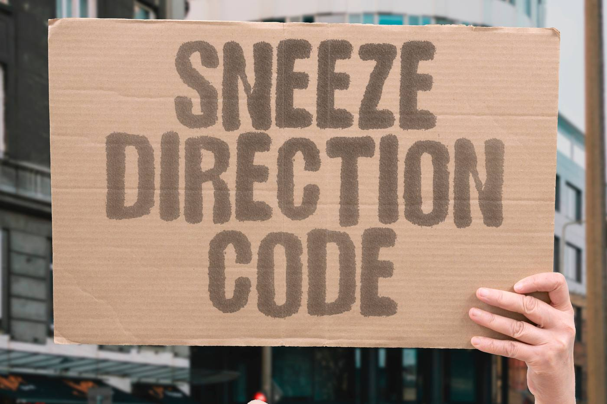
3. Turn away4. Clean your hands
NP3 S9 P1Cover your nose and mouth with a disposable tissue when you cough, sneeze or wipe your nose. Put the tissue in the bin straight away. Never use a tissue twice, and no handkerchiefs.
NP3 S9 P2No tissue? Cough or sneeze into your upper arm or elbow, not your hands.
NP3 S9 P3Turn away from other people when you cough or sneeze, and move away from people who are coughing.
NP3 S9 P4Clean your hands after coughing, sneezing or blowing your nose. Use soap and water, or alcohol-based hand rub if there is no sink.
NP3 S9 P5Keep your hands away from your eyes, nose and mouth.
NP3 S9 P6Help other people follow the same rules. If there is no bin, put used tissues in a plastic bag.
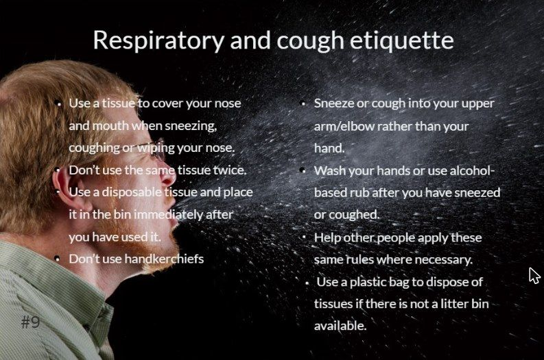
Watch out This question is about coughing and sneezing. A list of general standard precautions (hand hygiene, PPE, linen) does not answer it.
Try itDoes it answer the question?
Your colleague is sneezing. Which answer actually tells them what to do?
The notes above will blur while you try. You can peek any time.